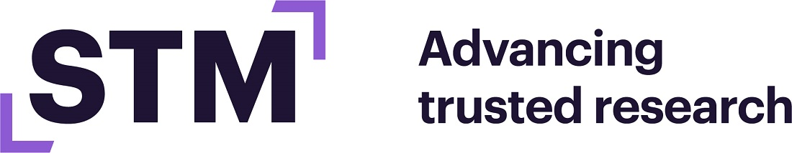

STM#
{kind=link}
Year of Open Science
STM stands for advancing open and trusted research, where researchers and the rest of society can rely on information that is credible, accessible, linked and searchable in perpetuity.
“The Year of Open Science is a great way to further catalyze action to ensure that validated, quality articles reporting on the latest discoveries are available widely to help society, linked to related data and other outputs,” said STM CEO Caroline Sutton. “STM and its members have been key partners with stakeholders, including federal agencies, to provide access to high quality, validated information that advances innovation. Through the Year of Open Science, STM looks forward to additional opportunities to work with federal agencies to enable sharing in a supported, sustainable manner.”
STM’s Year of Open Science Commitments
Support sustainable pathways to open access in collaboration with federal agencies and other stakeholders
STM and its members are committed to providing options that enable researchers to choose open access, to monitoring uptake of open access through the STM OA dashboard, and to working with other stakeholders to ensure pathways to open access work.
Throughout 2023, STM will continue to engage with stakeholders to find solutions that move us to open science at scale, including through public comment and engagement, convening and hosting events, and dialogue. We will also work to collect and share information on the open access environment that will be useful to develop policies. To that end, we released the Open Access Dashboard earlier this year (https://www.stm-assoc.org/oa-dashboard/), and will update it further with 2022 data later in 2023.
Learn more about STM’s commitment to Open Science at https://www.stm-assoc.org/stm-oa-position/
Continue work to protect the integrity and trust of the open scholarly record
As technology enables increased sharing and publishers work to enable more rapid communication, it also provides new and intensifying risks. STM and its member publishers will continue to invest in technologies and measures that are essential to open and trusted scholarly communications.
STM via the STM Integrity Hub is leading a collaborative and inclusive effort to innovate new and sophisticated approaches to stop fraudulent research from entering the academic record — while retaining trust which has long been a bedrock of the scholarly publishing system. In Spring 2023, the STM Integrity Hub launched the minimum viable product of a new papermill detection tool which allows publishers to screen submitted manuscripts for signs indicative of their having originated in a paper mill.
Improve research data sharing through STM’s Research Data initiative
Research data plays an essential role in advancing scholarship. Through collaboration, innovation and shared policies and practices, publishers are working with researchers, publishers, and other stakeholders to ensure data is shared, made FAIR (Findable, Accessible, Interoperable and Reusable), and linked, cited and used with integrity and to improve integrity.
STM’s Research Data Program supports publishers in implementing data sharing policies that ensure the accessibility and reproducibility of research data through sharing, linking and citing to data alongside publications — and determining the role of research data in the broader research ecosystem. STM is also working to engage with others in the research community, including funders, institutions and data repositories, to support collective efforts on data sharing, linking, and citing.
Learn more at: https://www.stm-assoc.org/research-data-program/
Map the open research infrastructure to identify gaps and seek opportunities to improve linking and discoverability
The STM Trends 2026 indicated that publishers need to work together to achieve Open Access at scale, and common infrastructure to support scholarly communications will be critical to achieve shared goals. Understanding the open research infrastructure will be essential to enable researchers to publish, discover and read scholarly works with ease and rely on the quality, integrity and trustworthiness of published research.
STM has funded independent research to examine this space, the first portion of which was delivered in April (https://sr.ithaka.org/publications/common-scholarly-communication-infrastructure-landscape-review/), with a final white paper to be published later this year.
Learn more at https://www.stm-assoc.org/infra-whitepaper/.